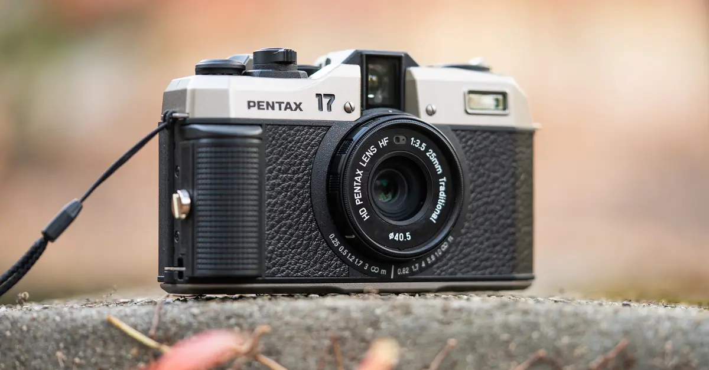

Analogni fotoaparat snima fotografiju na film osetljiv na svetlost.
| Deo | Objašnjenje |
|---|---|
| Objektiv | Objektiv je deo optičke sprave koja prikuplja svetlosne zrake sa posmatranog predmeta. |
| Sočivo | Sočiva lome vidljivu svetlost, uzrokujući povećanja ili smanjenja slike objekata po pravilima geometrijske optike. |
| Zatvarač | Zatvarač je uređaj na aparatu koji propušta svetlo u tačno određenom vremenu |
| Fotografski film | Fotografski film je tanki komad plastike presvučen na svetlo osetljivim solima srebrnih halida. |
| Vizir | Vizir se nalazi na zadnjoj strani kamere kroz koju se može videti subjekat ili scenu fotografije pre nego što se uslika |
